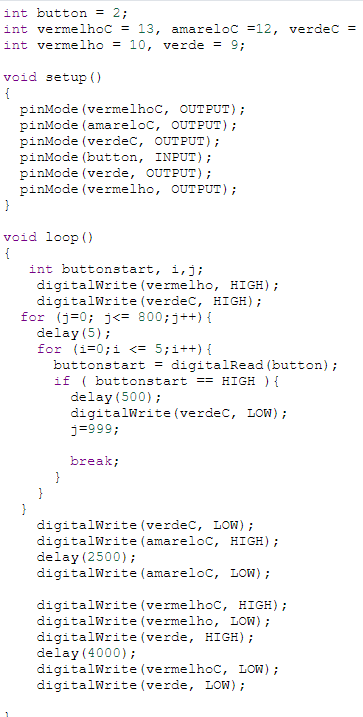

Introdução
Neste trabalho, foi desenvolvido um sistema de controle para um lado de um cruzamento. O sistema gerencia o fluxo de carros por meio de semáforos que são ajustados dinamicamente com base no volume de tráfego, garantindo maior eficiência e fluidez. Além disso, a passagem de pedestres é controlada por um botão de solicitação, e sinais sonoros e controladores visuais são utilizados para informar sobre as mudanças de sinal luminoso. O objetivo é assegurar a segurança e o bom funcionamento do tráfego no cruzamento, por meio de um sistema inteligente e automatizado. Os itens utilizados são:
- arduino;
- protoboard;
- resistores;
- LEDs (2 verdes, 2 vermelhos, 1 amarelo);
- jumpers;
- bateria (laptop).
- push button
- buzzer
A Montagem
Logo abaixo segue os principais passos a serem tomados para se montar esse circuito:
- 1. Reúna os componentes necessários, como Arduino, sensores de presença, LEDs ou módulos de semáforos, botão de solicitação de passagem, buzzer e display LCD ou LEDs.
- 2. Conecte os componentes ao Arduino, garantindo que os sensores e atuadores estejam devidamente conectados aos pinos corretos.
- 3. Escreva o código do Arduino usando a linguagem de programação C/C++, incluindo a lógica para detectar a presença de carros, controlar os semáforos e acionar os sinais sonoros.
- 4. Realize os testes e ajustes necessários para garantir o correto funcionamento do sistema.
- 5. Monte o sistema no cruzamento desejado, seguindo as especificações de segurança adequadas.
- 6. Monitore o sistema em funcionamento e faça eventuais melhorias ou otimizações conforme necessário.
Agora segue a foto do código (uma parte é em blocos, a outra em linguagem C++) que faz esse trem funcionar:
